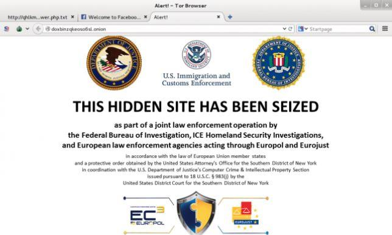

Internet est un adolescent attardé, une sorte de Tanguy auquel ses parents n'auraient jamais dit « Range ta chambre ! » Depuis l'adoption officielle du terme « Internet » le 1er janvier 1983, une gigantesque masse d'information s'est déversée sur le réseau mondial. En 2020, estiment les spécialistes, 44 zettabytes de données se seront accumulés sur Internet, un zettabyte équivalant à 152 millions d'années de visionnage de cassette VHS. Cette masse d'informations peu ou pas référencée constitue le « deep web » ou « web profond ». Ce sont les entrailles numériques d'Internet, un peu comme si on avait entassé en désordre tous les documents produits au cours de l'histoire de France aux Archives nationales sans jamais se préoccuper de recruter un bibliothécaire pour ranger tout cela. Le « darknet » ne représente lui qu'une infime partie de ce vaste foutoir électronique.
Le terme « darknet » désigne tous les types de réseaux cryptés qui sont autant d'« Internet parallèles ». Le plus connu est Tor, qui compte aujourd'hui 2 à 3 millions d'utilisateurs quotidiens, on peut également citer I2P ou Freenet, beaucoup moins populaires mais qui ont en commun avec Tor de proposer à leurs utilisateurs anonymat et confidentialité.
Les darknets ne sont pas des logiciels de partage de fichiers ou des réseaux sociaux alternatifs, comme le fameux Gab, créé en août 2016, sur lequel l'alt right américaine trouverait un libre terrain de jeu, mais de véritables réseaux autonomes à l'intérieur d'Internet. Si I2P ou Freenet demande un peu plus de compétences, l’utilisation de Tor est simple. Tor est d’abord un logiciel qui permet de naviguer sur Internet de manière anonyme mais il offre aussi la possibilité de créer un site internet disposant d'une adresse qui ne correspond à rien de ce que référencent habituellement Firefox, Chrome ou Yahoo. Contrairement à une adresse classique telle que https://lincorrect.org/, les adresses en .onion du réseau Tor ne contiennent aucune indication vraiment précise sur le contenu des sites vers lesquels elles renvoient, par exemple: http://3fyb44wdhnd2ghhl.onion
TOR PM / E-mail : un service populaire de messagerie privée pour les utilisateurs de TorPour accéder au site auquel mène cette adresse, il faut installer le navigateur Tor, puis copier et coller cette adresse dans la barre de recherche pour voir ce qui se cache derrière. Il existe une sorte de répertoire nommé Hidden Wiki, listant par domaine d’activité et centres d’intérêts différentes adresses en .onion. Une simple recherche Google donne aujourd'hui accès aux différentes versions du Hidden Wiki accessibles sur l'Internet classique et l'on peut également utiliser tout simplement le moteur de recherche intégré de Tor pour formuler des requêtes par mots-clés sur le réseau caché.
Le développement de ces réseaux inquiète bien sûr les autorités, eu égard aux activités peu recommandables qu'ils abritent : vente de produits stupéfiants en ligne, pédopornographie, réseaux criminels, forums de hackers sur lesquels sont échangés ou revendus les logiciels et failles d'exploitation qui ont permis, par exemple, de mener les attaques informatiques mondiales de mai 2017 frappant des institutions bancaires ou des hôpitaux.
Le phénomène pose cependant d'autres questions que celles de la sécurité et de la cybercriminalité. A l'origine, les premiers projets de réseaux cryptés avaient été conçus par des communautés de programmeurs et d'activistes favorables à la défense des libertés individuelles sur Internet et hostiles à la mainmise des Etats ou des multinationales sur le réseau mondial. Edward Snowden, en révélant, en juin 2013, l’existence du système de surveillance mis en place par la National Security Agency, a nettement contribué à accroître la popularité de Tor dont le nombre d’utilisateurs a explosé au cours de l’été 2013. A rebours de l'extraversion caractérisant le Web 2.0, celui des réseaux sociaux tels que Facebook, on constate aujourd'hui une augmentation de la « demande d'anonymat » correspondant aux craintes éprouvées par une partie de l'opinion quant au respect de la vie privée et de la liberté d'expression sur Internet. Des réseaux comme Tor accueillent aussi des dissidents de pays autoritaires, des journalistes ou des internautes qui estiment que, même dans les pays démocratiques, Internet est soumis à la pression de l'idéologie et de la censure qui ne garantit plus une liberté d'expression totale. Ainsi a-t-on vu se multiplier sur Tor, en plus des tribunes anarchistes ou cyberlibertaires, des sites de « réinformation », ou des tribunes politiques très actives, notamment pendant les campagnes présidentielles américaines ou françaises.
La tentation du repli communautaire ou idéologique au sein de réseaux cryptés n'est qu'un aspect d'une tendance plus large qui inquiète les autorités de gestion d'Internet. Ainsi, les critiques virulentes adressées par certains Etats à l'ICANN (Internet Corporation for Assigned Names and Numbers), institution qui gère l'attribution des noms de domaines et des adresses électroniques que ses détracteurs estiment trop soumise à l'influence du droit et des multinationales américaines, amènent des nations comme la Russie, la Chine, la Turquie ou l'Iran à envisager la création de leur propre « Internet national ». Ce type de projet - Internet alternatif exclusivement russe, ou Internet « hallal » 100% iranien – aurait cependant des conséquences économiques que ces gouvernements ne seraient peut-être pas prêts à assumer. De fait, le modèle qui prévaut pour ces Etats reste la censure à tout-va, comme celle pratiquée en Turquie ou dans la Chine du « Grand pare-feu national ».
Évidemment, le développement des réseaux cryptés comme Tor, I2P ou Freenet ne plaît pas plus aux gouvernements des pays autoritaires qu'il ne rassure ceux des démocraties, qui craignent l'existence de ces zones de non-droit numériques. Pourtant, en vertu de l’un de ces nombreux paradoxes dont l’histoire n’est jamais avare, Tor est lui-même, à l'origine, un projet financé par l'US Navy qui avait pour but d'offrir aux militaires et aux agents de renseignement un espace de communication et d'échange de données confidentiel sur Internet.
Un problème se posa cependant rapidement, formulé par Paul Syverson, l’un des concepteurs de Tor : « Si vous avez un système qui dépend uniquement de la Navy, tout ce qui en sort est lié de manière évidente à la Navy. Vous avez besoin d’un réseau qui supporte un trafic ouvert à d’autres gens. » Ce que firent les autorités américaines en transférant en 2004 la gestion de Tor à l’Electronic Frontier Fondation, ONG fondée en 1990 par John Perry Barlow, ancien parolier du Grateful Dead, cyber-anarchiste auteur en 1996 de la « Déclaration d’indépendance du cyberespace ».
Aujourd'hui supervisé par l'Electronic Frontier Foundation, le projet Tor bénéficie toujours d'un financement gouvernemental, paradoxe incompréhensible pourtant clairement expliqué par l'un des premiers concepteurs du projet, Michael Reed : « Il ne s'agissait pas d'aider les dissidents des régimes autoritaires. Pas d'assister les criminels dans la couverture de leur trace électronique. Pas d'aider les utilisateurs de bitTorrent à éviter les poursuites du MPAA et de la RIAA. Pas de donner à un gosse de 10 ans les moyens de contourner un filtre anti-pornographie. Bien sûr, nous savions que ces usages détournés seraient inévitables mais cela était sans réelle importance par rapport au problème que nous avions à résoudre et si ces usages nous procuraient une meilleure couverture de trafic nous permettant de dissimuler l'utilisation que nous voulions faire du réseau, c'était d’autant mieux…Comme je l’ai dit un jour à un officier supérieur pour son plus grand désarroi. »
La manœuvre a si bien fonctionné que ce far-west numérique, pandémonium diabolique pour les uns, garants des libertés pour les autres, gagne en popularité, au point que même Facebook et Twitter se sont installés sur le réseau Tor. A terme, la croissance des darknets peut laisser entrevoir une nouvelle évolution des usages d'Internet sur laquelle ni les Etats, ni les GAFA n'exerceraient vraiment de contrôle : un retour à l'Internet des premiers temps en quelque sorte...avant que quelqu'un ne sonne à nouveau la fin de la récré...
Partager cette page